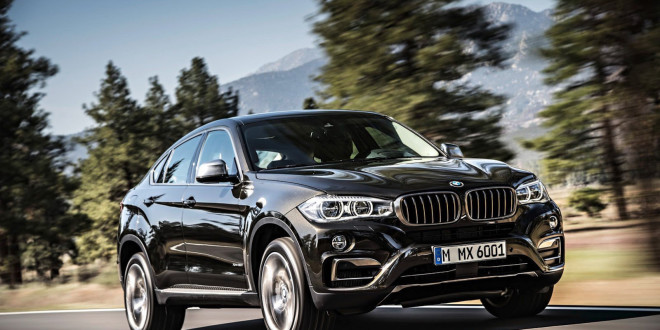
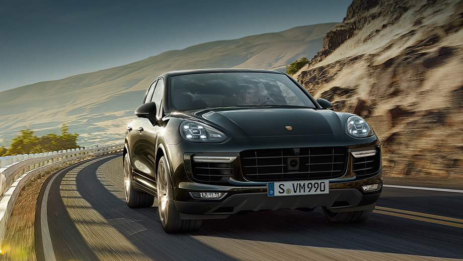
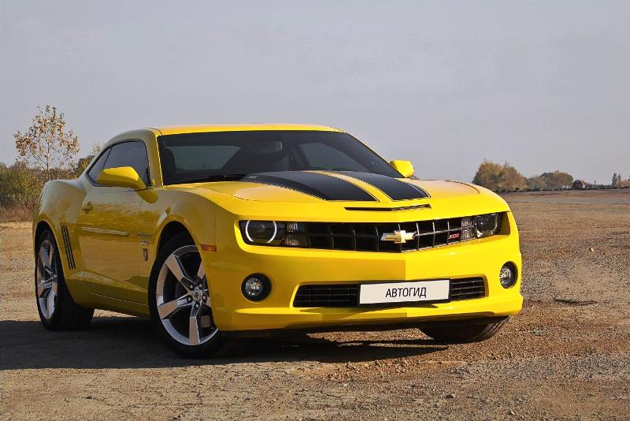

BMW X6 |
|
 подробней |
Мощный и атлетичный. Солидный как модели серии X и спортивный как купе. BMW X6 сметает все границы. Его мощные двигатели BMW TwinPower Turbo из программы BMW EfficientDynamics объединяют в себе динамику и экономичность, а система интеллектуального полного привода BMW xDrive обеспечивает отличные характеристики на любой дороге. Пакеты дизайна Pure Extravagance и благородные материалы придают автомобилю впечатляющий внешний облик и поразительную функциональность. |
Porsche Cayenne |
|
|  подробней |
Мы создали автомобиль, который в равной степени уверенно справляется и с повседневными задачами, и с шиканой в Лагуна-Сека, а также готов как к дальним поездкам, так и спринтерским стартам. Это автомобиль для всей семьи и одновременно только для Вас. При этом он сохраняет свой характер: это настоящий Porsche Динамика, 5 дверей, разносторонность, комфорт. Cayenne последовательно идет своим путем. С энергичным дизайном. С интеллектуальными системами помощи водителю. С эффективными силовыми агрегатами. С высокой мощностью. И с Porsche Communication Management (PCM), включая навигационный модуль, который предлагает разнообразные информационно-развлекательные возможности. Например, благодаря Porsche Connect с беспроводным доступом в Интернет, а также полезными услугами и приложениями. |
Chevrolet Camaro |
|
|  подробней |
Дух Camaro остается легендарным, его ДНК — неизменным, всё остальное было переосмыслено во славу производительности и комфорта. Встречайте: новый Camaro — легендарный автомобиль в современном исполнении. Вы по достоинству оцените его совершенные пропорции, узнаваемый брутальный облик, отличную управляемость и стильный, с особым вниманием к деталям, комфортный интерьер. Знакомьтесь: совершенно новый Chevrolet Camaro — победитель Motor Trend’s 2016 Car of the Year®. |